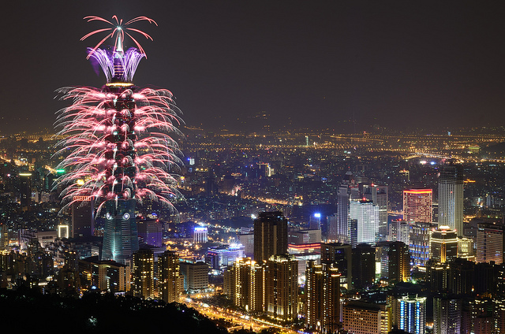

Taipei 101 – meter-tall skyscraper
Taipei 101 is a, 508-meter-tall skyscraper located in the Xinyi District of Taipei.It held the title of the world's tallest building from 2004 to 2010.
- Region: Xinyi Dist
- Best Time: ay trip in any season
- Don’t miss: features a luxury shopping mall and an observatory offering a 360-degree bird's-eye view of the Taipei basin.